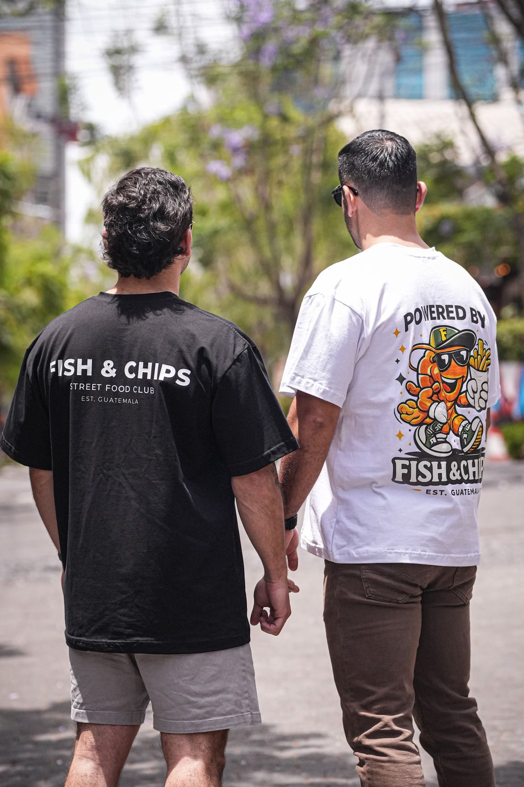

01
📍FOTO DEL LOCAL PRÓXIMAMENTE
GUATEMALA · SINCE 2019
Fish & Chips, camarones, ceviches y favoritos que se disfrutan mejor sin complicaciones.
Crujiente, dorado y hecho para repetir.
NUESTRA HISTORIA
Fish & Chips nació con una idea sencilla: servir comida que la gente realmente quiera volver a comer. Con el tiempo, la marca creció alrededor de sabor, fútbol, experiencias, street food y comunidad.
“GOOD FOOD.
GOOD VIBES.”
ENCUÉNTRANOS
FISH STREETWEAR
Camisetas oversize con el sello Fish & Chips, para llevar la vibra del Street Food Club a donde vayas.
VER CAMISETAS
EVENTOS · EMPRESAS · CELEBRACIONES
Llevamos la experiencia Fish & Chips a tu evento con menús personalizados, montaje y servicio.
HABLEMOS